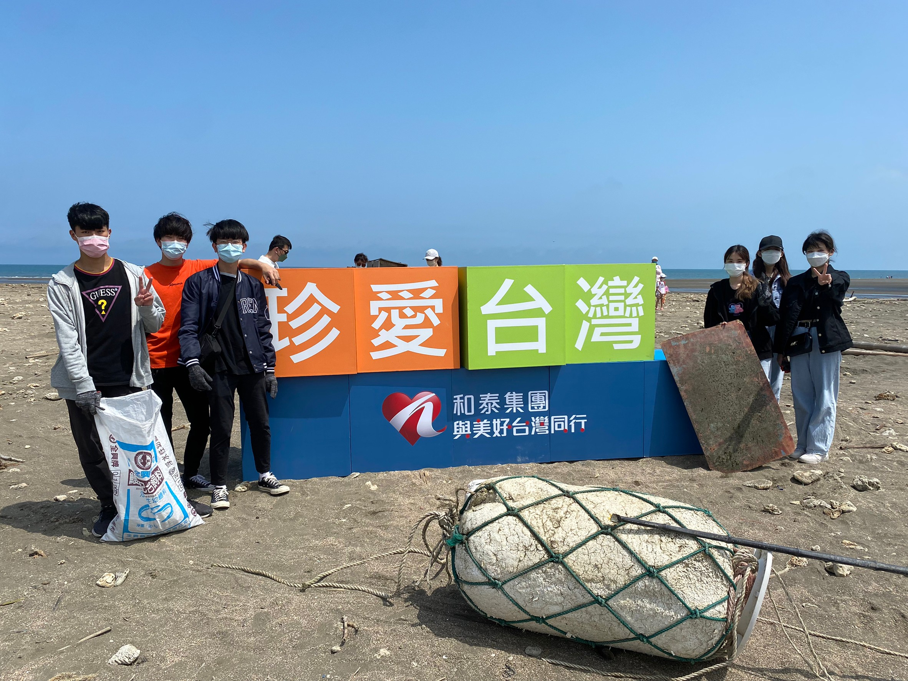

Skills
Python
65%
Java
50%
HTML&CSS
76%
Word
90%
PPT
92%
Excel
85%
Projects
企業概論 — 誕在懷裡．捲在心裡
這堂課程讓我學習到如何規劃一個企業的商品買賣，第一次接觸從接洽、進貨這些最初端的工作，
到如何找客源並且對他們進行行銷，是一堂很有趣的課，從中也學習到非常多。
管理學 — 珍愛台灣

這是我第一次去做淨灘的活動，平常都只有在書裡網路媒體裡看到，實際進行後有被震驚到，
沒想到垃圾的數量真的有如此龐大，也讓我反思了生活中對於環保的意識需要更強才行。
Club
中原大學 熱舞社
國高中一直都想學看看跳舞，但礙於課業壓力，一直沒有辦法完成這小小的夢想。
所以大學毫不猶豫地選擇了熱舞社，在裡面大家都有一顆熱愛跳舞的心，一起努力、一起進步。
在大二時決定接幹延續這份想跳舞的心，因此交到了更多志同道合的朋友。
也因為和可愛的大家一起共事，使即便再忙碌的日子也都沒有過得那麼辛苦了！